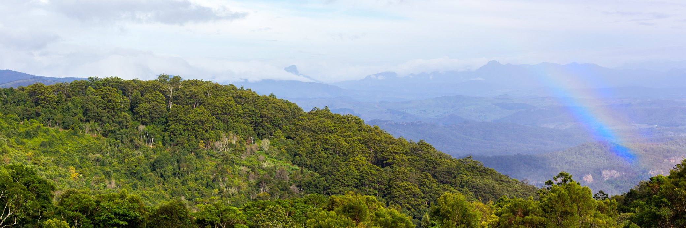
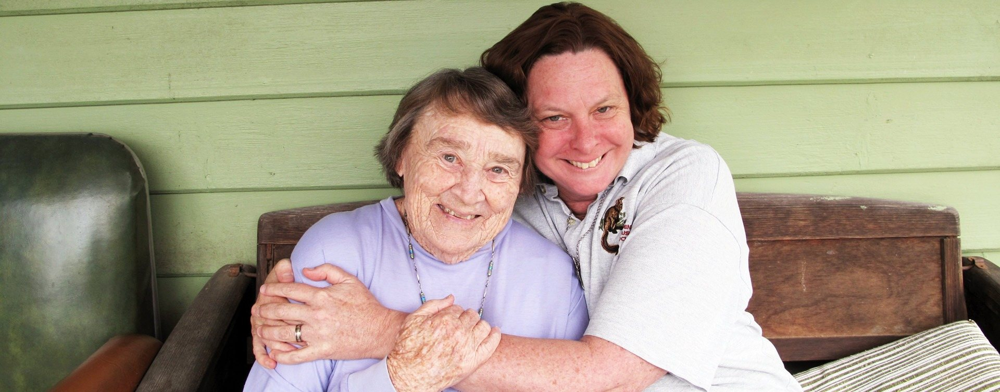
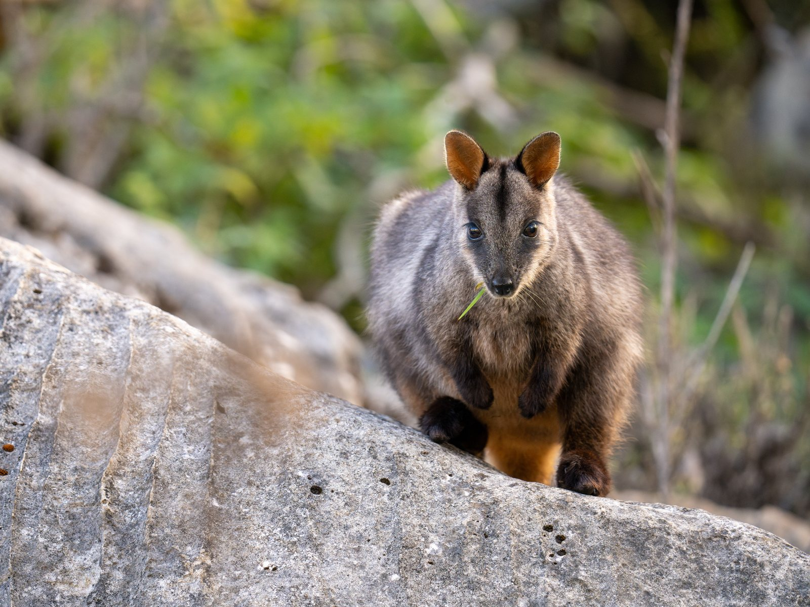
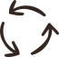
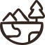
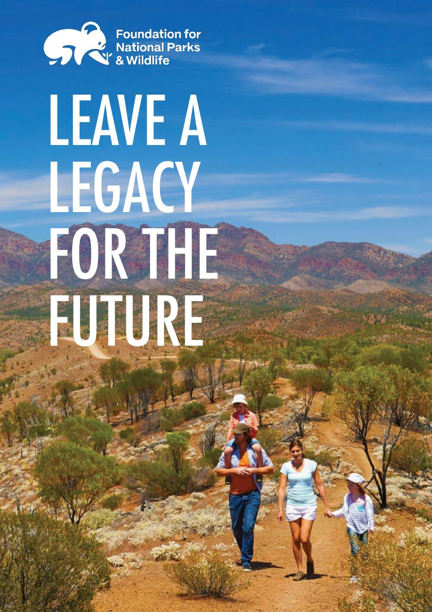

A gift that lasts longer than a lifetime.
A bequest to our Foundation is one of the most meaningful gifts you can make. It allows you to protect the wild places you love, for the people who come after you.

No pressure, and no hurry.
To be turning over the idea of giving something of yourself to the natural world is a quietly remarkable thing. It means that somewhere in the way you think about the years ahead, you have made room for the wild: the birdsong outside the window, the bushland on the edge of town, and the animals whose survival rests with people they will never know.
A gift in your Will is among the most personal decisions you will ever make, and it deserves time, conversation and care. This page is here to help when you are ready. Whatever you decide, we are honoured that you are thinking of nature, and of us, as part of the story you leave behind.
One gift, carried a long way.
A gift in your Will rarely works alone, and that is its quiet strength. We use it to draw in government and philanthropic support and to match it to the right project at the right moment, so a single gift can become the catalyst that protects a landscape, restores a river system or brings a species back from the edge. Here is where it can go.

Growing National Parks
National parks are the strongest protection Australian law can give a landscape. When land of high conservation value comes up, often right beside an existing park, we help buy it and hand it into the national parks estate, safe from clearing and development forever.
Your gift can help
- add land to Australia’s permanently protected national parks
- join existing parks into larger, connected landscapes
- improve visitor facilities, so more people can enjoy the parks
Projects like Mundoo Island and Remarkable Southern Flinders
See all Growing National Parks projects
Saving Species
Australia is home to plants and animals found nowhere else on Earth, and one of the worst extinction records anywhere. We fund recovery programs run with researchers, carers, Traditional Owners and land managers, backing flagship species and overlooked ones alike.
Your gift can help
- protect threatened and endangered species and their habitat
- fund breeding programs, monitoring, nest boxes and disease treatment
- create wildlife corridors so animals can move and recover
Projects like the Warddeken Mayh Recovery Project, the Curb Wombat Mange Program and Mountain Pygmy Possum recovery
See all Saving Species projects
Healing the Land
Much of Australia is damaged rather than destroyed, and damaged land can heal. Through our Landscape Resilience Program we restore country affected by bushfire, flood and clearing, and we stay for the follow-up: watering, weeding, monitoring and replanting.
Your gift can help
- restore and regenerate habitat in existing parks
- replant bushland and repair wetlands and waterways
- support cultural fire and caring-for-Country programs led by First Nations communities
Projects like Yarrahapinni Wetlands and Fire Wise
See all Healing the Land projectsAcross all of our work, your gift can also help conserve and share Australia’s cultural heritage, and educate and inspire the conservationists of today and tomorrow.
You can direct your gift to the pillar closest to your heart, or trust us to place it where the need is greatest at the time. Either way, we will honour your wishes with the same care we would want for our own family.
Barbara Harris, and the island her gift saved.

Some gifts change a single life. Barbara Harris left one that changed an entire landscape. When the Estate of the Late Barbara Harris came to us, it carried something rare: a transformative gift, given freely, for the protection of the natural world she loved. It became the foundation of one of the most significant conservation victories in our recent history.
At the Murray Mouth in South Australia, where the Coorong’s freshwater meets the sea, lies Mundoo Island. After more than a century of farming, its 1,900 hectares of wetlands, saltmarsh and coastal habitat came to market in a narrow window. Building on Barbara’s gift, we mobilised the catalytic funding to close the final gap, and working with the Australian and South Australian Governments, the Ngarrindjeri Aboriginal Corporation and our conservation partners, we secured the whole of Mundoo for Coorong National Park.
It is home to 65 nationally threatened species and a refuge for migratory shorebirds on the East Asian-Australasian Flyway, and for thousands of years it has held deep cultural meaning for the Ngarrindjeri people, whose connection to this Country continues to guide its care. None of it would have happened without Barbara. One person, thinking of the future, can protect an island for every generation that follows.
Their names are written into the landscape.
For decades, people have written the wild into their Wills. Because of them, whole corners of national parks, reserves and walking tracks exist today, and they will be there for the generations who follow.
A gift in your Will could be the next story told here.
-
Ivan Saleta
Lachlan Valley, NSWThanks to Ivan, 20,000 hectares of bushland were gifted to the NSW National Parks & Wildlife Service to create the Hunthawang Precinct of the Lachlan Valley State Conservation Area. It now protects habitat for the endangered Malleefowl, along with the Superb Parrot, Major Mitchell’s Cockatoo, Brown Treecreeper and Painted Honeyeater.
-
‘Kitty’ Catherine Clare White
Morton National Park, NSWThanks to Kitty, 2,086 hectares of bushland were purchased for Morton National Park, for future generations to enjoy.
-
Kenneth Hoskins
Cecil Hoskins Nature Reserve, NSWThanks to Kenneth, the reserve has been revegetated and given upgraded tracks, new signage and a bird-viewing platform with seating and bird identification information. Kenneth was related to Sir Cecil Hoskins, who helped establish the reserve through a donation to us many years ago.
-
Eulie Sandrey
Mother of Ducks Lagoon Nature Reserve, NSWThanks to Eulie, important wetland preservation research was supported at a reserve that is a haven for more than 80 species of birds and two species of endangered frogs.
-
Janet Cosh
Fitzroy Falls, NSWThanks to Janet, the East Rim Wildflower Walk near Fitzroy Falls, a much-loved 7 km walk, was upgraded for everyone who walks it.
Simpler than most people expect.
Leaving a gift in your Will can be taken one gentle step at a time, and you are free to revisit your decision whenever your circumstances change.
- Talk it through with the people you loveA conversation with family or close friends often brings clarity and a shared sense of purpose, and it means your wishes are understood by those closest to you.
- Speak with your solicitor or financial adviserThey can make sure your Will reflects exactly what you intend, and that it looks after both the people and the causes you care about.
- Choose the gift that feels rightThe types of bequest below explain the options, and our suggested wording will help your solicitor put your wishes into words.
- Let us know, if you would like toYou are never obliged to tell us. If you are comfortable doing so, it lets us thank you properly and understand your wishes. The decision always stays yours.
Choose the gift that suits you.
There are a few simple ways to leave a gift in your Will, and your solicitor can help you find the one that fits your circumstances. Whichever you choose, it is received with the same gratitude, and no gift is ever too small to matter.

Residual gift
This is what remains of your estate once you have provided for the people you love and any debts and specific gifts are settled. Because it is worked out last, it never takes from anyone else you have named, and it keeps pace as the value of your estate changes over the years.
Percentage gift
None of us can know what our estate will be worth in the end. Leaving a percentage or share, rather than a fixed amount, means your gift to nature stays in proportion with everything else you leave behind, whatever the final value.
Specific sum
A set amount, large or modest, that feels right to you. It is the simplest gift to write, though it is worth reviewing every few years, because inflation and changing circumstances can alter what a fixed amount will do.

Land, property or assets
You might leave a specific asset such as property, shares or artwork. We also welcome gifts of land, and if that is what you have in mind, we would love to talk early so we understand your hopes for it. Find out about donating land.
You can also give through a trust, or leave a gift for a specific purpose such as buying land for a national park or protecting a particular species. If you would like to do either, please get in touch first so we can make sure your wishes can be fulfilled.
Suggested wording for your Will.
If you would like to include a gift to us, your solicitor may find the following wording helpful. Please confirm the details with us or with your solicitor before finalising.
A note on tax
For many people, a gift in their Will is a tax-effective way to give, and as a registered charity with Deductible Gift Recipient status we are able to receive gifts of this kind. Everyone’s circumstances are different, so we always recommend talking it through with your solicitor or financial adviser. We are not able to offer legal or financial advice ourselves, though we are always glad to answer questions about our work and how your gift would be used.
If you are an executor
If you are managing an estate that includes a gift to us, please contact us on 1800 898 626 or fnpw@fnpw.org.au and we will help with whatever you need.
Trust like this deserves a plain answer.
When you place this much trust in us, you deserve to know exactly what we will do with it. So here is our promise, plainly made.
- Your gift reaches the groundThe great majority of what you give funds real, on-ground conservation.
- We are careful stewardsWe direct your support to where it does the most good, and report on it openly.
- We show our workingWe share our impact through stories, photographs and measurable results you can see for yourself.
- We will never pressure youThere are no street fundraisers and no relentless calls, just an honest relationship on your terms.
- We honour your wishesHowever you choose to give and whatever you choose to support, your intentions are treated with the utmost care.

Something to read at your own pace.
Our brochure sets out how a gift in your Will works, the difference it makes and the options open to you. It is yours to read quietly, share with family, or take along to your solicitor.
Questions about gifts in Wills.
Do I need to tell you if I leave a gift in my Will?
Can I choose what my gift supports?
How will my gift be used?
Do I need a great deal of money to leave a gift?
Can I change my mind later?
How do you make my gift go further?
How do you work with Traditional Owners?
Still have a question? Send us a bequest enquiry or call 1800 898 626.
We are here whenever you are ready.
Whether you have already included us in your Will, you are still thinking it over, or you simply have a question, we would be glad to hear from you. Every conversation is confidential and carries no obligation.
Bequest enquiry
Let us know you have included us in your Will, or ask us anything at all. We will come back to you personally.
The form is taking a while to load. Email fnpw@fnpw.org.au or call 1800 898 626 and we will take your enquiry directly.
Everything you share is kept confidential and handled in line with our privacy policy.